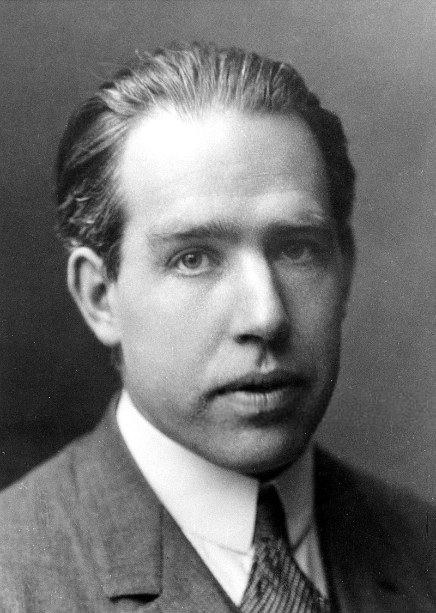

|  |
Danish physicist Niels Henrik David Bohr won the Nobel Prize in 1922 for his groundbreaking discoveries that helped us comprehend the structure of atoms and the idea of quantum theory. Bohr studied physics at the University of Copenhagen, where he earned his doctorate in 1911. He was born in the Danish capital, Copenhagen, in 1885. After that, he collaborated with Ernest Rutherford for two years at the University of Manchester in England. Bohr came back to Denmark in 1913 to accept a job at the University of Copenhagen. Bohr developed the principle of complementarity, which states that although photons and electrons can act like waves or particles, they cannot be viewed in both modes simultaneously. He proposed this concept in 1928. In addition to being a physicist, he was a philosopher. |